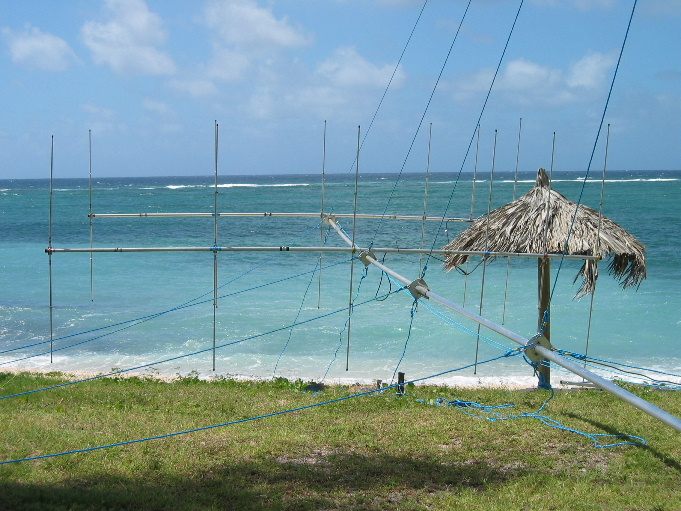
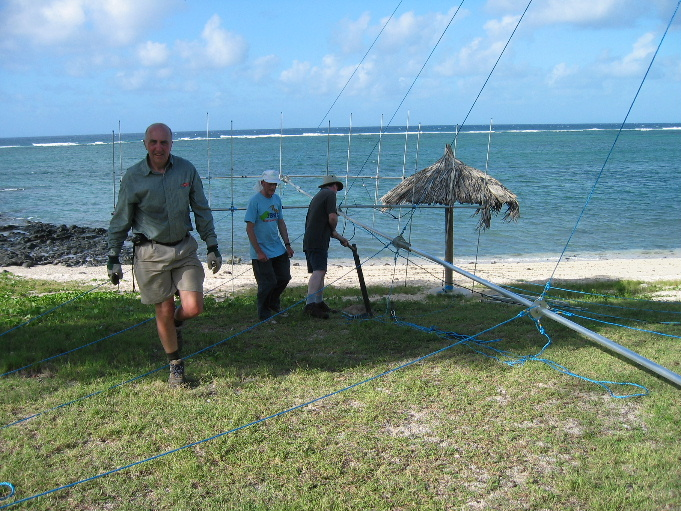
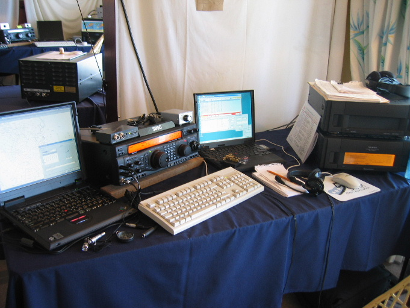
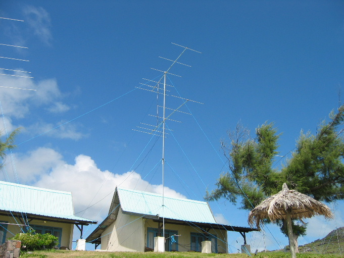

FSDXA Rodrigues Is DXpedition
(2004.Mar.19-Apr.12)
FSDXA Rodrigues Is DXpedition
(2004.Mar.19-Apr.12)
|
[50MHzのコンデション] 3B9Cが一斉に運用を開始した3月19日の夜は、50MHzのコンデションは完全に落ち込んでいた。 初日はHF帯のパイルを横目に早々にシャックを離れたが、 やはりコンデションが気になって翌朝は02:00z(06:00LMT)に50MHzのSite＝7に"出勤"した。 901室のコテージのドアーを開けると、夜通し運用していたHF帯の"勤務者"がわき目も振らずにパイルを捌いている。 さっそく50MHzをワッチしてみたがコンデションは昨夜よりノイズも無く静かになっていた。朝方のパスも無さそう。 この時間、ヨーロッパは深夜過ぎなのでパスは期待出来ないため、昨夜からヨーロッパ向けになっていたアンテナをJA方向に向け、 50.102MHzで自動送信の"CQ..."を送信し続けた。 [難産だった50MHzの初QSO] CQを出し始めて約4時間半後の06:37z(10:37LMT)、突然50.102MHzの"CQ"に初めて反応があった。 スキャッター気味の弱い信号が自動送信の"CQ..."の合間に時々聞こえる！。 1時間ほど聞いて07:21z(11:21LMT)にようやくコールサインが確認できた。 この弱い信号はチャゴス(Chagos Is)のVQ9LA・Larryだった。 VQ9LAからは、出発前の3月1日にメールでQSOの申込みを受取っていたが、距離的には近いもののオープンの確率は不明だった。 VQ9LAは短い入感だったが、CWによるQSOは完全なものだった。この局が3B9Cからの50MHzでの初QSO局となった。 CWでのQSOの最後に"SSB"のリクエストを送ってきたが、直後に信号は落ちてしまい2度と上がってこなかった。 再び50MHzは"静寂"に戻ってしまった。
  50MHzのクッシュクラフトの6elアンテナを調整/いよいよアンテナを引き上げ
[50MHzでJAが大オープン！]

 50MHzの6ele×2アンテナ/50MHzのサイト
[ヨーロッパもオープン！] JAとQSO中の09:43z(13:43LMT)に、突然RS59+でキプロスの5B4FL・Nickが呼んできた！。 JAとのコンデションはまだわずかに続いていたが、この時点でアンテナをヨーロッパ方向に回した。 さっそくサルジニア(Sardinia)のIS0GQXがコールしてきた。 その後は4X1IF、SV1DH、9H1BT、9H1TX、UK9AA、YA4F、I0JX、ZC4TS、9A5ST等、 JA局にもお馴染みの局が立て続けに呼んできた。50MHzのEMEでJAでも知られているIW5DHNも呼んできた。 入感エリアはYA、UK8/9の西アジアから5B4、4X/4Z、ZC4の中近東、SV、9H、I/IW、9Aなど地中海沿岸の南ヨーロッパが中心で、 これより奥までは聞こえなかった。このヨーロッパ方面へのオープンは12:09z(16:09LMT)まで続いた。 この初日のオープンは、5時間を超える予想もしていなかったFBなコンデションで、JA、EUを中心に165 QSOを記録した。 昨日までの心配は、一気に吹き飛んだ。50MHzのコンデションに期待が持て楽しみだったが、 この時はまだこのコンデションが毎日続き、帰国するまで昼食の時間が無くなってしまうとは考えても居なかった。 2日目(21日)も07:40z(11:40LMT)から昨日と同じようにJAがオープンしてきた。 信号も昨日以上に強力だった。初日はSSBの運用は行わなかったが、今日はSSBでも楽にQSO出来る強さだった。 オープンは西日本が中心だったが、バンド一面に大陸方面からの48-49MHz帯のTVのバズ(Buzz)が広がり、 3B9Cが運用周波数に指定していた50.102MHzや50.110MHzはオープン直後から完全にマスクされ受信不能となった。 50.115MHzが3B9Cの運用の"指定席"になったのは、この周波数が比較的バズが少ない周波数だったためだ。 翌日も、その翌日もJAの信号は08:00z(12:00LMT)前後から"版で押したよう"に同じ時間に入感してきた。 JAがオープンする時にはJA1、2など東日本からオープンする時と、西日本やHL/BGから入感する2種類があり、 西日本寄りからのオープンでは、使える周波数を見つけるのが難しくなるほど、バズの混信に悩まされる事が多かった。 スプリットを指定したくても50.120MHz付近は混信で結果的には妨害の少ない周波数を探しながら"相手"を拾うQSOとなった。
  海側から見た50MHzのアンテナ(JA方向に向いている)/50MHzを運用するJA1RJU
入感の頻度が多いと考えられていたヨーロッパ方面はせいぜい地中海沿岸止まりで、 高緯度の中、北部ヨーロッパまでオープンする事は無かった。 3B9CからQSO出来たヨーロッパの最も西寄りの局は、2日目のオープンでQSOしたEH7KW(Spain)だった。 今回のヨーロッパの最も遠距離のQSO局となったのはEMEでQSOしたスウェーデン(Sweden)のSM7BAEだった。(詳細は別項) アフリカは初日にQSOしたVQ9LA(Chagos Is)と2日目夜にVR2の入感時に北東のスキャッターで入感したFR1AN(Reunion)、 筆者の運用最終日の3月31日の夕方にQSOしたEH9IB (Ceuta Melillia)の3局だけだった。 運用開始一週間後の3月27日には、50MHzの総QSO数も794、23エンティティーに達し、 1999年に運用した3B9Rが50MHzで記録した総QSO数 762(JA局658、18エンティティー)を上回った。 滞在期間の中でJA方面にコンデションの良かったのは3月25日と28日で、この日はJA1エリアなど東日本が強力に入感した。 1エリアがオープンした時にはまだ未交信のJA7、8エリアの北日本を指定して狙ってみたが、やはり緯度の高いエリアとのオープンは難しく、 残念ながらQSO出来なかったのが唯一心残りとなった。 滞在中は50MHzの運用は筆者一人に任せられていたため、毎日昼食時からオープンするJAに付きっきりとなり、 帰国の日までの全期間(2週間半)"昼食抜き"となった。しかし、これは何にも換えがたい嬉しい"誤算"だった。
[50MHzのオープンから]
[6m EMEへの挑戦] 当初、サンスポット下降期のこの時期、50MHzでのF2によるDX-QSOはあまり期待出来ないのではないかと予想された。 3B9から磁気赤道を挟んで南北のパスとなる中央アジア、中近東、南ヨーロッパ方面は問題はないとしても、 JA方面へのパスはインド洋方面に強い沖縄、奄美などでのオープン以外は期待出来ないと予想した。 とくに地球の裏側になる北米や南米、中部太平洋方面のパスは絶望的に思われた。 DX-Peditionの準備が進んでいた2004年1月13日に、JAでも50MHzのEMEが許可され、 WSJTのデータ通信モードを使ったEME通信で北米、ヨーロッパ、アフリカなどとJAからQSOに成功している実績を踏まえ、 急遽北米との唯一のQSOの手段として当初の予定に無かった50MHzのEMEを運用スケジュールに組み込んでもらった。 従来のCWでの通信では絶対に考えられないDX-Peditionでの50MHzのEMEだったが、WSJTというデータ通信が開発された事で、 微弱信号でも可能になったEME通信にトライする事になったのだ。 3B9CとのEMEに一番乗り気だったW7GJ・Lanceから、事前にロドリゲス島での詳細な運用データも送ってくれた。 クッシュクラフト製の6ele×2のアンテナとFT-920/VL-1000のラインの設備ではEME通信では十分とは言えないのは判っていたが、 この時点では既に機材は現地に向けて発送された後で変更や追加は出来なかった。 現地の立地条件も不明だったため、周囲に障害物となる高地の無い事を願いながら出かけた。 運用地のホテルに到着して真っ先に確認したところ、危惧した通り西側の小高い丘が「月の入り」に影響して、 290度付近に沈む月には影響が出そうな状態だった。 この丘の影響を考慮し当初予定していた"月の入り"のEMEのスケジュールは一旦"白紙"に戻されることになった。
[SM7BAEと初の50MHz EMEのQSO] [復活したEMEスケジュール(LMTは+4時間)] 3/27 SM7BAE 0730-0830z 50.145MHz SM7BAE 1630-1730z 50.145MHz 3/28 SM7BAE *1750-1830z 50.145MHz (* QSO) 3/29 WA4NJP 1850-1920z 50.145MHz 3/30 W7GJ 1000-1050z 50.190MHz 3/30 W1JJ 1940-2020z 50.153MHz 3/31 W7GJ 1040-1110z 50.190MHz3/27-3/31にかけての7回行われたスケジュールでQSO出来たのは3/28のSM7BAEだけだったが、 WSJTとはいえ"装備不足"がそのまま結果に出た感じだった。 3B9CとのQSOに最も期待を寄せてくれたのは北米のW7GJ・Lanceだったが、北米西海岸はちょうど3B9から地球の裏側にあたり、 両者間の"月のウインドー(Common・Window)"も狭く難しいトライだった。 さらに彼にとって不運だったのは、ちょうどスケジュールの時間帯が3B9からアジア方面がオープンしている時間と重なってしまい、 大陸方面からの強力なTVのBUZZでスケジュールの周波数(50.190MHz)が、TVのBUZZの混信で受信不能になってしまったことだった。 近接する多くのアンテナから発射される"KW"の電波が飛び交う中で、微弱な50MHzのEMEの信号を解読し、 QSO成功をもたらしてくれたWSJT(新JT65A)の通信モードに改めて驚かされるトライだった。 このQSOはロドリゲス島からの初のEMEのQSOとなった。 50MHzの6ele×2のアンテナを3.8mの間隔のスタックとした。結果的にこのアンテナと700W程度でもEMEでのQSOが可能な事を立証出来たのは、 特筆すべき経験だった。 3B9Cでは3/30日から第2陣のグループにより432MHzのEMEも運用された。 FT-847(+Pri-AMP)と700Wリニアー+19ele×4の本格的な設備でサテライトも含め66 QSOを行っている。 [最後に] 3B9CのDX-Peditionは4月12日まで運用され、この日で全周波数での運用を停止したが、やはりサンスポットの減少によるコンデションの低下は否めず、 HFのハイバンドを中心にQSO数は延びなかった。 3B9Cの総QSO数は153,109で終わり、2001年に同じFSDXAにより運用されたD68C(Comoros)の総QSO168,772の記録には及ばなかった。 最後に、このコンデションの下降期にも関わらず50MHzをワッチ、DX-Peditionを盛り上げて頂いた各局に御礼申し上げます。 "3B9C・Rodrigues Is"がNewだった皆さんおめでとう御座います。 [筆者・Menber of 3B9C JA1RJU/小笠原一夫] |
 |
3B9C(1) Rodrigues Is |
|
3B9C(2) EMEへの挑戦 |
 |
3B9C(3) Album |